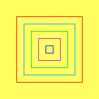
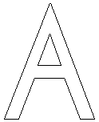
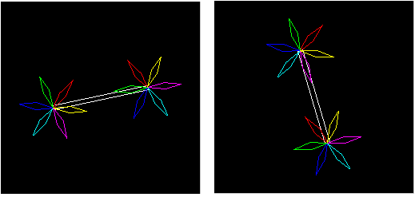

Labs for The Most Complex Machine
xModels Lab 1: Two-D Graphics and Animation
IMAGES ARE OFTEN CREATED ON COMPUTERS in a two step process. First, a geometric model of a scene is created, then the scene is rendered using realistic coloring and lighting effects. In this lab and the next, you will use an applet called xModels, which deals with the model-construction stage of image creation. This lab covers two-dimensional scenes, while the next lab moves on to the problem of working with three-dimensional objects.
Complex geometric models are built up out of simpler components which are scaled, rotated and positioned in the scene using geometric transformations. Simple geometric shapes like circles and lines are used as a starting point in the modeling process. These shapes can be combined to form more complex figures that can then be combined to form even more complex scenes.
Scenes constructed from objects in this way can be used in a natural way to produce animations. An animation is just a sequence of frames in which objects move slightly from one frame to the next. When the frames are quickly displayed one after the other, the viewer perceives objects in motion.
In this lab, you will use the xModels applet to create two-dimensional geometric models and simple animations. In the process, you will learn about various two-dimensional geometrical transformations. The lab is based on the material in Section 12.1 of The Most Complex Machine. Some of the questions at the end of Chapter 12 -- and their answers in the back of the book -- are also relevant
The lab includes the following sections:
- Introducing xModels
- Basic Objects and Basic Transformations
- Animation
- Defined Objects and Structured Complexity
- Exercises
Start by clicking this button to launch the xModels applet in its own window:
(For a full list of labs and applets, see the index page.)
Introducing xModels
The xModels applet that you launched above is set up to load several sample programs. Programs for xModels are actually scene descriptions written in a scene description language. A scene description consists of a list of objects in a scene, together with geometric transformations to be applied to the objects and attributes that affect the object's appearance. (In xModels, the only attribute that an object can have is a color.) A scene description can include definitions of objects to be used later, perhaps repeatedly, in the scene. Such object definitions are very much like subroutines in a programming language. Finally, there are a few special-purpose commands in the xModels scene description language that can be used to control such things as the background color and the number of frames in an animation.
When the applet first starts up, you should see a text area containing a scene description called "Pinwheel." It describes an animation showing a revolving, colored pinwheel displayed on a black background. Don't worry for now about the scene description itself. Your first task is to learn how to get xModels to display the scene.
To see the scene represented by a scene description in xModels, you have to render it by clicking the "RENDER!" button below the text area. When you click this button, the applet first checks the scene description in the text area for errors. Assuming that no errors are found, the applet will switch to a "Graphics" panel, where it will display the scene. Try it now. To the right of the displayed scene is a set of controls. You should familiarize yourself with the controls. Here is a brief description of each:
- A message at the top of the column of controls shows the number of the frame that is currently displayed. An animation consists of a sequence of frames, which are displayed one after another. The "Pinwheel" animation has 121 frames, which are numbered from 0 to 120. (If you get tired of watching this message flash, try clicking on it with your mouse. This might make it stop, depending on the version of Java that you are using.)
- The "New Program" button will give you a blank text area where you can write your own scene description from scratch. Choosing "[New]" from the pop-up menu at the very top of the applet will have the same effect.
- The "Show Program" button will take you back to the scene description that produced the image or animation displayed on the graphics screen.
- The next four buttons are used to control animations. If the scene description specifies a single image, all four buttons are disabled. The "Go" and "Pause" buttons can be used to start and stop an animation. If an animation has been paused, then the "Next Frame" and "Previous Frame" buttons can be used to move though the frames in the animation, one frame at a time.
- Next, there is a pop-up menu to control the speed at which animations are played back. The default is 10 frames/second, which should be OK for most purposes. (This menu represents only a request for a given frame rate. The computer might not be able to display frames as quickly as you request.)
- Finally, there is a pop-up menu that determines what happens when the computer reaches the end of an animation. In the default setting, "Loop," the computer will return to the beginning of the animation and replay, and will keep doing this until you stop it. For many animations, the first frame is the same as the last, and the "Loop" option produces what looks like continuous motion. The second option in the menu is "Back-and-Forth," which makes the computer reverse direction at the end of the animation and play it backwards. The last option, "Once Through" makes the computer stop when it reaches the end of the animation.
After you have played with the "Pinwheel" animation for a bit, it's time to learn how to write a scene description of your own.
Basic Objects and Basic Transformations
To begin working with scene descriptions, click on the "New Program" button, or select "[New]" from the pop-up menu at the top of the applet. In this section, you will work with single images. Animating an image will be a simple extension of this.
To add an object to a scene, you just have to add the name of the object to the scene description. Every time you use the name, you get a new copy of the object. If you give only the name of the object, it will appear at a default size, position, and orientation. If you want it to have a different size, position, or orientation, you have to apply one or more transformations to the object. This is done simply by listing the transformations after the object name. For example, the word "square" will add a square to the scene. It will be a small square, one unit wide and one unit high, in the center of the scene. (The entire image always includes a 20-by-20 unit region, with x-coordinates from -10 to 10 and y-coordinates from -10 to 10. Since the image might not be exactly square, it can extend farther than this in one direction or the other.)
To get a bigger or smaller square, you can apply a scale transformation. To get a square that is five times as large as the default, you have to scale it by a factor of five. This is done by saying square scale 5. Try typing the following scene description into the empty text area. The render the scene and see what you get:
square square scale 5You should see two squares of different sizes. (By the way, if you make some sort of mistake in the program, an error message will be displayed above the text area. You can click on the message, if you like, to make it go away.)
Now, using transformations is not the most obvious way of doing things, but it turns out to be remarkably powerful and even, after some experience, intuitive. In addition to the scaling transformation, the geometric transformations that you can use are translation and rotation. Scaling changes an object's size. Translation moves it. Rotation pivots it about the point (0,0) or about some other specified point. (It is important to understand that you don't actually see the object moving. The applet applies the transformations to determine the size, position, and orientation of the object before it adds the object to the scene. You only see it in its final position. Later, you'll see how to make an animation in which objects do seem to move, but even then each individual frame of the animation is constructed as described here.)
You've seen that the transformation scale 5 magnifies an object by a factor of 5. To shrink an object, you would use a scaling operation with a factor less than 1, as for example in square scale 0.5. The scale command can also be used with two numbers. The first number gives a horizontal scaling factor and the second a vertical scaling factor. For example, square scale 2,5 specifies a rectangle that is 2 units wide and 5 units tall. (By the way, the comma in "2,5" is optional. The xModels applet ignores commas. You can put them in, if you like, for human readability.)
The transformation rotate 45 pivots an object through an angle of 45 degrees in a counterclockwise direction about the point (0,0). A negative angle would rotate the object in a clockwise direction. It is possible to specify a different pivot point. For example, square rotate 45 about 0.5,0.5 would pivot the square about its upper right corner, (0.5,0.5), instead of about (0,0).
The transformation translate 3,7 moves an object 3 units to the right and 7 units up. Negative numbers can be used to move the object to the left and down. If the translate command is used with just one number, as in translate -5, it indicates horizontal movement to the left or right. For convenience, there are also commands xtranslate and ytranslate for moving an object horizontally or vertically only. For example, "square ytranslate 5" produces a square translated five units upwards.
You can apply a sequence of transformations to the same object, simply by listing them all after the object's name, in the order in which they are to be applied. For example,
square scale 3 rotate 30 translate 5,5specifies a square that is first magnified by a factor of 3, then rotated through 30 degrees, then translated 5 units horizontally and 5 units vertically. The order in which the transformations are applied can make a difference. Switching the order can produce a very different picture.
There are other basic objects besides squares. A circle is a circle of diameter one, centered at (0,0). A line is a line of length one that extends from the point (-0.5,0) to (0.5,0). A polygon can be specified by listing its vertices. For example,
polygon 0,0 0,5 3,4specifies a triangle with vertices at the points (0,0), (0,5) and (3,4). These few simple shapes are all that you have to work with.
To make things a little more interesting, you can add color to your scenes. The default drawing color is black. You can use a color-change command to change the drawing color. The drawing color that you specify remains in effect until it is changed by another color-change command. (That is, it does not just apply to the next object.) The color-change commands include the names for the standard colors: red, green, blue, cyan, magenta, yellow, black, white, and gray. There is an rgb command that uses three numbers to specify the red, blue, and green components of a color. The numbers must be in the range zero to one. For example, "rgb 0.7 0.7 1.0" represents a light blue color. (There is also an hsb command that lets you specify the hue, saturation, and brightness levels of a color, but I won't discuss the details here.)
For example, here is a scene description for an image scene that contains several objects of different colors:
red square scale 2 translate 5,5 cyan circle scale 5,2 rotate 30 rgb 0.4 0.2 0.2 square scale 3 rotate 30 translate -5,5 blue polygon 0,0 0,5 3,4 translate -7,-7 magenta line scale 5 rotate 45 translate 5,-5You can give your scene a background color with the background command. The word "background" must be followed by the color you want to use for a background. For example:
background gray or background rgb 1.0 0.8 0.8The background command should occur at most once in a scene. It will have the same effect no matter where it occurs.
You'll find a copy of the above scene description, with a pink background, in the sample program "SimpleObjects". You can select this example from the pop-up menu at the top of the applet. You should render the scene to see what it looks like. You should also spend some time making modifications to the scene. Try changing the color of the objects or the background. Try changing the numbers for the transformations. Add some new objects and new transformations. You should try to understand how scenes are constructed from objects, transformations, and colors.
Animation
Let's face it, static scenes are not all that exciting. Animation makes things get a lot more interesting. To make an animation in xModels, you just have to do two things to your scene description: put an animate command at the beginning, and change some of the numbers in the scene description to number ranges. Here is a simple example, which can also be found in the sample scene description, "FirstAnimation":
animate 30 circle scale 1:5 red polygon -4, -3 4, -3 -5:5, 4 blue square scale 7:15, 1 rotate 0:60The first line of this scene description is an animate command which specifies that 31 frames will be rendered. (There are 31 frames, not 30, because the number in the animate command gives the length of the animation, not the number of frames. There are 30 intervals between frames, so there are 31 frames.) The remaining lines are a standard scene description, except that in some cases number ranges, such as 1:5 or 0:60, appear instead of single numbers. Where such a range appears, the first value in the range is used in the first frame, the second value is used in the last frame, and intermediate values are used in intermediate frames. If a range is used with translate, the object moves during the animation; if it is used with scale, the object grows or shrinks; and if with rotate, the object rotates through a range of angles.
The "FirstAnimation" example shows a circle that grows from size 1 to size 5 over the course of the animation. It contains a red polygon in which the x-coordinate of one of the vertices ranges from -5 to 5. And it has a blue rectangle that both changes size and rotates during the animation. Try out the example, and make sure you understand it. Try modifying it and adding to it!
Computer animation uses the idea of key frames. The key frames in an animation are specified explicitly. Other frames, which bridge the gaps between key frames, are created by the computer by interpolating between the key frames. The sample animation given above has just two key frames, one at the beginning and one at the end. In a number range such as 1:5, the first number gives the value for the first key frame, and the second gives the value for the second key frame. The xModels applet computes intermediate values for the intermediate frames.
In xModels, you can create animations with more than two key frames. I call such animations segmented animations. You can specify how many frames there are in each segment, between the key frames. For example,
animate 15 30 10specifies that there are four key frames. Therefore, there are three segments in the animation. The first segment contains 15 frames, the second contains 30, and the third contains 10. The key frames are frames number 0, 15, 45, and 55.
When you use a number range in a segmented animation, you must specify a number for each of the key frames. For example, you could use the number range 1:3:5:2 in an animation with three segments and four key frames. (Note that the number of colons is always equal to the number of segments.) The number range 1:3:5:2 specifies a value of 1 for the first key frame, 3 for the second, 5 for the third, and 2 for the fourth and final key frame.
You can leave out some of the numbers in the middle of a number range (as long as you don't leave out the colons). For example, the number range 1:::2 provides a value of 1 for the first frame and a value of 2 for the last frame. The computer interpolates smoothly between these two values for all the intermediate frames.
For example, here is an animation that shows a small square moving along the inside edges of a big square. You might want to type this in -- or cut-and-paste it in -- and see how it works:
animate 15 15 15 15 square scale 12 red square scale 2 translate -5:5:5:-5:-5 5:5:-5:-5:5
Defined Objects and Structured Complexity
It's a long way from simple geometric shapes to complex scenes. As usual, this complexity is handled by tackling it level-by-level, with reasonable jumps in complexity from one level to the next. In the xModels applet, new objects can be defined on one level that can then be used on higher levels. An object definition takes the form of the word define followed by a scene description enclosed in square brackets ("[" and "]"). For example:
define wheel [ circle line line rotate 60 line rotate 120 ]When a definition like this one occurs in a scene description, it does not immediately add anything to the overall scene. It just defines the word "wheel" for the computer as a new type of object made up of the specified parts. Once this definition has been made, a "wheel" can be used like any other object. You can apply the same transformations to wheels that apply to other objects. For example:
wheel scale 2 xtranslate -2.5The word wheel becomes part of the language of xModels, on an equal basis with square and circle. It can even be used in the definitions of other objects!
The sample program named "Wagon" contains an example in which wheels are defined and used. Open the file, read it, and render it to see what it looks like. Note that the wheels on the wagon rotate. Another example is given in the sample program "Houses," which you should also look at.
Exercises
Exercise 1: Write a scene description for a still image that shows five squares of different colors nested inside one another, like this:

Use any colors you like (as long as you don't use the default color, white, for the background).
Exercise 2: This exercise builds on the nested squares that you created for Exercise 1. Turn your scene description into an animation in which each of the five squares rotates about its center. The squares should rotate at different speeds. Some of them should rotate clockwise and some should rotate counterclockwise. (The speed of rotation has to do with the range of angles through which the object rotates over the course of the animation.)
Exercise 3: The first scene you looked at in this lab was the "Pinwheel" example. The scene description for this example contains no comments. Explain what each line in this scene description does.
Exercise 4: Carefully explain the difference between
square scale 5,2 rotate 45 and square rotate 45 scale 5,2What image is produced by each command? Why are they different? How does the computer carry out each command?
Exercise 5: Use two polygons to make a large letter A, like this:

The triangle inside the top of the A is one polygon. All the other lines form another, larger polygon.
Exercise 6: This exercise builds on the "Pinwheel" example. Use the definition of the pinwheel object form that example. Make a "double_pinwheel" object consisting of a long rectangular bar with a rotating pinwheel at each end. Use your double_pinwheel object in an animation that shows a double pinwheel rotating about its center. Here are two frames from such an animation:

Exercise 7: The sample scene description called "Bounce" contains an animation in which a red circle seems to bounce back and forth between two edges on a square. Try it. Add a second circle bouncing between the other two edges. The second circle should be blue. This can be done by adding two short, simple lines at the end scene description (one for the color and one for the ball). Think about geometric transformations!
Once you have the two bouncing circles inside the square, make the square and the two circles into a single object by putting them into a "define" command. Make an animation in which the combination object rotates and changes size.
Exercise 8: Write an essay comparing object definitions in xModels with subroutine definitions in a programming language such as xTurtle. How are they similar, and how are the different. (Among other things, you should discuss the fact that object definitions in xModels do not have parameters. What are the consequences of this?)
Exercise 9: Write an essay discussing how objects created by the "define" command can be used to create complex scenes. Why is the ability to define objects so important to dealing with complexity? (Keep in mind that once an object has been defined, it can be used as a component in another, more complex object. Your essay should discuss this fact.)
Exercise 10: Design your own animated scene using xModels. Try to be creative and/or aesthetic.
This is one of a series of labs written to be used with The Most Complex Machine: A Survey of Computers and Computing, an introductory computer science textbook by David Eck. For the most part, the labs are also useful on their own, and they can be freely used and distributed for private, non-commercial purposes. However, they should not be used as a formal part of a course unless The Most Complex Machine is also adopted for use in that course.--David Eck (eck@hws.edu), Summer 1997